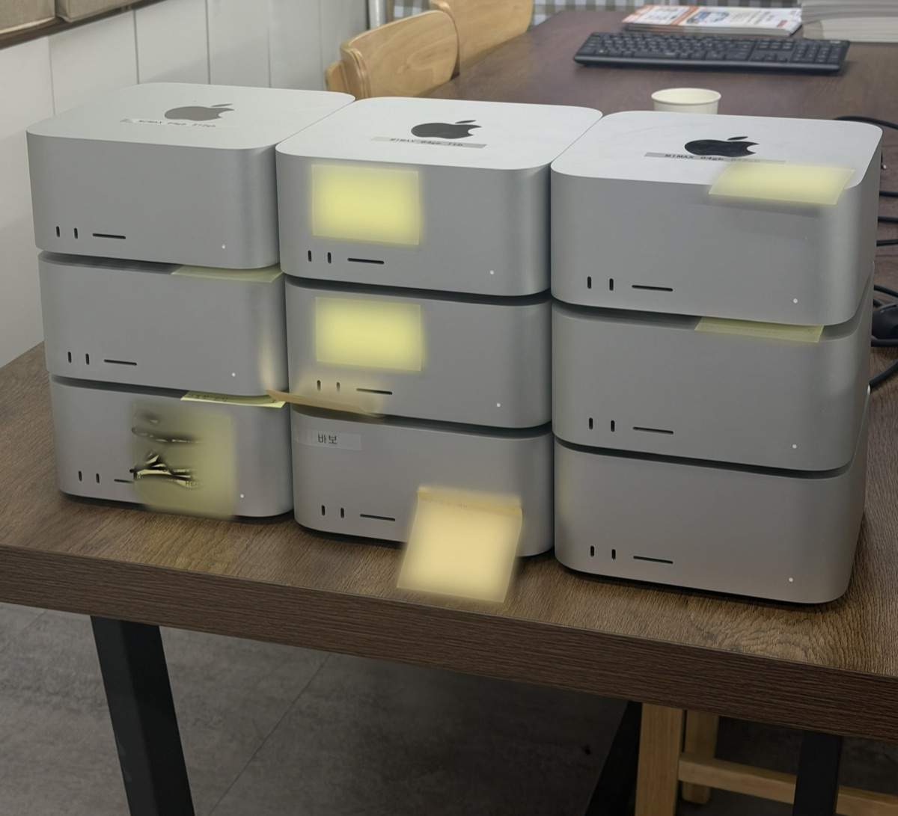

2026.05 - 2026.06 · 6주 · 프리랜서
기업 AI 시스템 구축
3인 기술팀 리드 · 공통 인프라와 고객·통화 데이터 트랙
팀마다 업무 에이전트를 두자는 대표님의 요청에, 개인용으로 쓰던 에이전트 메모리를 팀 메모리로 확장해 대응했습니다.
- 팀원에게 배포하기 전에 누구나 전체 기록을 볼 수 있다는 문제를 발견해 각자 자기 기록만 보이도록 바꾼 뒤 팀원 4명에게 배포
- 자동 보고서를 직접 채점해 재현율 0.45가 나오자 빠진 22건을 모두 열어 봤고 실제 누락은 1건임을 확인 채점 기록
- 일일 보고 작성을 자동화해 약 30분에서 5분 이내로 줄임
현장 사진
사내 맥 서버 독립망 (역할 배정)
